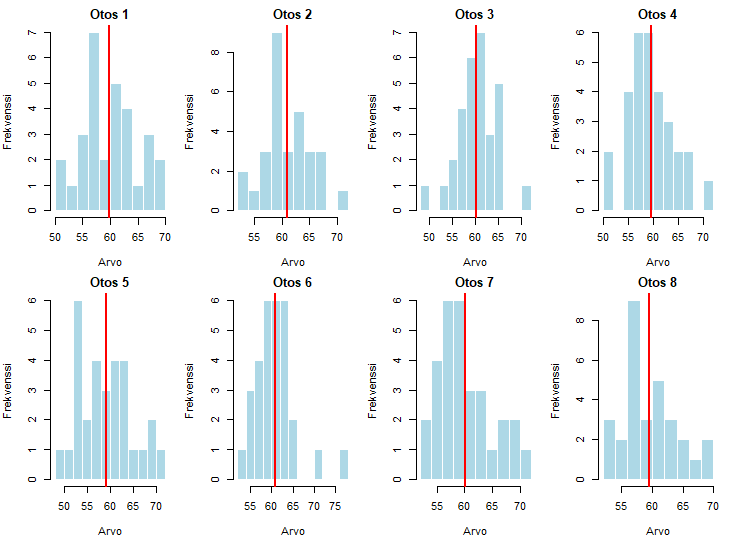
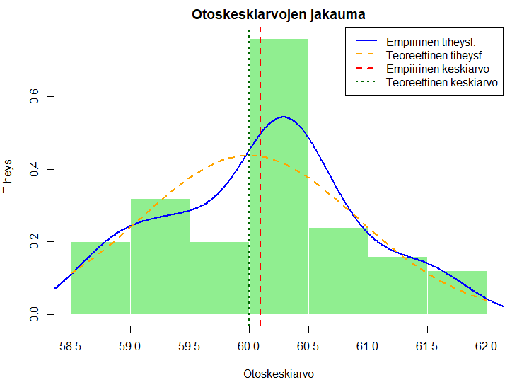
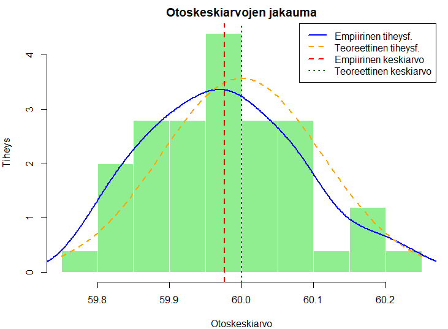
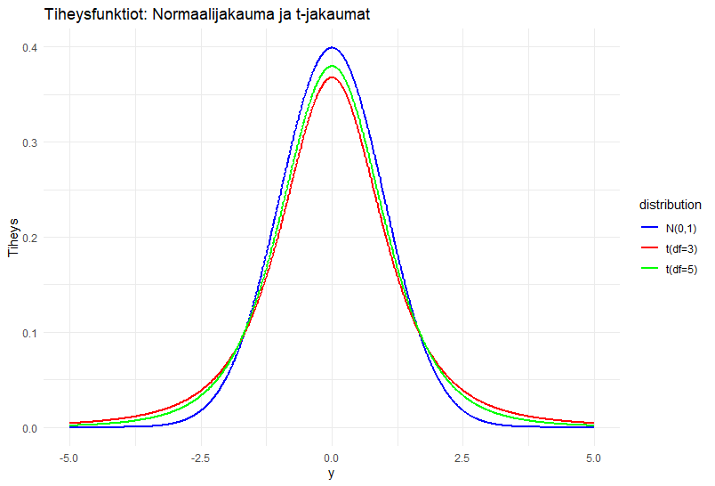

12 Otosjakaumat ja epävarmuuden arvioiminen
Tässä luvussa pohditaan tarkemmin sitä, miten tilastollisessa tutkimuksessa saatujen tulosten epävarmuutta voidaan arvioida.
Erilaisten tutkimustulosten yhteydessä törmätään usein esim. ns. virhemarginaalin käsitteeseen. Virhemarginaalilla tarkoitetaan kansankielessä jonkin tunnusluvun, kuten esimerkiksi keskiarvon, arvojen sellaista vaihteluväliä, joka johtuu satunnaisuudesta. Käytännössä se tarkoittaa sitä, että saatu tulos, estimaatti, on ilmiön käyttäytymiseen (otantaa toistettaessa) nähden epävarma.
Mistä tämä epävarmuus tutkimustuloksissa kumpuaa ja miten siihen voidaan tutkimusta tai koeasetelmaa suunnitellessa vaikuttaa?
Tilastotieteen yksi keskeisimpiä tavoitteita on pyrkiä tuottamaan tarkkaa ja tutkittua tietoa. Kun tutkimuskohteena on epävarma ja satunnainen ympäröivä maailma, onkin tilastollisten menetelmien luotettavuuden kannalta keskeistä pyrkiä arvioimaan tätä epävarmuutta, jotta saatuihin tuloksiin voidaan luottaa ja ymmärtää samalla tuloksiin liittyvän epävarmuuden suuruutta. Tässä luvussa käsitellään tähän epävarmuuteen liittyviä tilastotieteen perusteita.
12.1 Otosjakauma
Hieman kertauksena jo edellisistä luvuista, mutta nyt täydennettynä otosjakaumaa koskevalla määrittelyllä voidaan todeta seuraavaa.
Otosjakauma
Tunnusluvun/estimaattorin otosjakauma. Tunnusluku (\(T\)) (kuten esim. otoskeskiarvo) on satunnaismuuttujien \(Y_1,\dots,Y_n\) funktiona myös satunnaismuuttuja. Tämä tarkoittaa että tunnusluvun (\(T\)) arvot vaihtelevat otoksesta toiseen (tämä on ns. otosvaihtelua) jonkin todennäköisyysjakauman mukaisesti. Tätä kutsutaan tunnusluvun (\(T\)) otosjakaumaksi (otantajakaumaksi) ja sen avulla saatujen tunnuslukujen (estimaattien) luotettavuutta voidaan arvioida.
Tähän määrittelyyn liittyen on syytä vielä todeta, että todellisissa tutkimustilanteissa otantaa ei yleensä toisteta, jolloin otoksen poiminnassa käytetty otantamenetelmä (kuten arvonta) on ainutkertainen tapahtuma. Usein otantaa ei voida toistaa edes periaattessa. Tämä tarkoittaa, mikä voi tuntua yllättävältä, että otostunnuslukujen teoreettinen otosjakauma voidaan silti saada selville ja hyödyntää siten tilastollisessa päättelyssä ja lopulta aineiston käytännön analysoinnissa.
- Ts. todennäköisyyteen perustuvassa otannassa otantavirhettä (eli, kuten aiemmin todettiin, otannasta aiheutava satunnaisuus tunnusluvun arvossa) voidaan arvioida yhden otoksen perusteella, koska tunnetaan tunnusluvun otantajakauma.
Edellisiin lukuihin viitaten, tässäkin tapauksessa otosjakaumat riippuvat tuntemattomista parametreista, joiden arvoja ei yleensä tunneta ja niitä pyritään estimoimaan kerättyä otosta ja sopivaa tunnuslukua käyttäen.
- Parametri on (usein) perusjoukon tunnusluku, jota halutaan arvioida. Parametrit estimoidaan, kuten olemme jo aiemmin nähneet, käytännön havaintoaineistoa käyttäen.
Otosjakaumien teoria muodostaa perustan parametrien estimoinnille sekä estimaattorien ominaisuuksille sekä parametreja koskevien hypoteesien testaamiselle. Tähän liittyvä tilastollinen päättely tähän asti opittuna:
- Tilastollisessa tutkimuksessa pyritään tekemään päätelmiä aineiston generoineen satunnaisilmiön luonteesta. Ts. pyrkimyksenä on tehdä yleistyksiä otoksesta perusjoukkoon.
- Satunnaisilmiötä ja sen generoinutta aineistoa kuvataan todennäköisyysjakaumalla, jonka muodon määrää kyseisen jakauman parametrit.
- Parametrit ovat tilastollisessa päättelyssä mielenkiinnon kohteena ja niitä pyritään estimoimaan havaintoaineistosta otostunnusluvuilla/estimaattoreilla.
Aritmeettisen keskiarvon ominaisuuksia. Edellisestä luvusta muistamme, että aritmeettinen keskiarvo on eräs aineistosta yleisesti laskettu tunnusluku. Tarkastellaan seuraavaksi aritmeettisen keskiarvon otosjakauman ominaisuuksia.
Edellä tehtyjen (sm:jia \(Y_i\) koskevien) oletusten pätiessä voidaan osoittaa (perustellaan myöhemmillä kursseilla) että aritmeettisella keskiarvolla \(\bar{Y}\) on seuraava odotusarvo ja varianssi: \[\begin{equation*} \mathsf{E}(\bar{Y}) = \mu, \quad \mathrm{ja} \quad \mathsf{Var}(\bar{Y}) = \frac{\sigma^2}{n}. \end{equation*}\] Aritmeettisen keskiarvon \(\bar{Y}\) standardipoikkeama on tällöin \[\begin{equation*} \text{D}(\bar{Y}) = \sqrt{\mathsf{Var}(\bar{Y})} = \frac{\sigma}{\sqrt{n}}. \end{equation*}\] Standardipoikkeamaa kutsutaan myös keskiarvon keskivirheeksi ja se kuvaa otoskeskiarvon otosvaihtelua odotusarvon \(\mu\) ympärillä.
Standardipoikkeama ja keskivirhe
Huomioi, että otoskeskiarvon varianssi on eri asia kuin otosvarianssi. Otoskeskiarvon varianssi kuvaa sitä, miten otoskeskiarvon toteumat vaihtelevat otantaa toistettaessa, eli otoksesta toiseen. Näin ollen otoskeskiarvon varianssia voidaan käyttää saadun otoskeskiarvon toteuman luotettavuuden arviointiin.
Huomataan myös, että aritmeettisen keskiarvon otosjakauma keskittyy yhä voimakkaammin havaintojen yhteisen odotusarvon \(\mu\) ympärille, kun otoskoko \(n\) kasvaa.
- Ts. otoskoon \(n\) kasvaessa \(\mathsf{Var}(\bar{Y}) = \frac{\sigma^2}{n}\) pienenee (koska nimittäjä suurenee suhteessa osoittajaan). Näin ollen aritmeettinen keskiarvo tuottaa tarkempia estimaatteja odotusarvosta silloin, kun otoskoko on suuri.
Otoskeskiarvo ja normaalijakautunut otos. Muodostakoot sm:jat \(Y_1, \ldots, Y_n\) satunnaisotoksen normaalijakaumasta \(\text{N}(\mu, \sigma^2)\). Tällöin voidaan osoittaa, että havaintojen \(Y_1, \ldots, Y_n\) keskiarvo \(\bar{Y}\) noudattaa normaalijakaumaa odotusarvolla \(\mu\) ja varianssilla \(\sigma^2/n\) (ks. yllä) ja pätee jakaumatulos \[\begin{equation*} \bar{Y} \thicksim \text{N} \Big(\mu, \frac{\sigma^2}{n} \Big). \end{equation*}\]
Itse asiassa ns. asymptoottiseen teoriaan vedoten eli suurten otosten tapauksessa (ts. \(n\) on “iso”) voidaan osoittaa, tämä jakaumatulos pätee myös ilman sm:jien \(Y_i\) normaalisuusoletusta.
Tämä tulos perustuu yhteen tilastotieteen kaikkein keskeisimmistä tuloksista eli keskeisen raja-arvolauseeseen (KRL).
KRL:n olennainen ja intuitiivinen tulkinta merkitsee satunnaismuuttujien otoskeskiarvon taipumusta noudattaa normaalijakaumaa riippumatta satunnaismuuttujan taustalla olevan otosjakauman muodosta. Tällä on merkitystä monessa yhteydessä, joista mm. alempana tarkasteltava luottamusvälin muodostaminen on yksi esimerkki. Ylipäätään tämä hyvin tärkeä tulos on merkittävä peruste normaalijakauman keskeiselle asemalle tilastotieteessä.
KRL:n tarkempi tarkastelu vaatii jälleen selvästi enemmän käytyjä tilastotieteen (ja matematiikan) opintoja.
Esimerkki: Aritmeettisen keskiarvon otosjakauma normaalijakautuneen aineiston tapauksessa
Tarkastellaan seuraavaksi simuloidun esimerkin avulla aritmeettisen keskiarvon ominaisuuksia. Erityisesti klassisessa tilastotieteessä tilastollinen päättely, esimerkiksi luottamusvälien konstrulointi, perustuu ajatukselle toistetusta aineistonkeruusta. Tätä on helppoa havainnollistaa simuloimalla käyttäen moderneja tietoteknisiä ratkaisuja, joiden avulla voidaan generoida halutulla tavalla jakautuneiden satunnaismuuttujien realisaatioita.
Aritmeettisen otoskeskiarvon tapauksessa tämä tarkoittaa sitä, miten realisoituneet otoskeskiarvot vaihtelevat satunnaisesti, kun otantaa samasta kohdepopulaatiosta toistetaan.
Yllä esitetyn tuloksen nojalla otoskoko näyttelee keskeistä roolia otoskeskiarvojen vaihtelun suhteen.
Olkoon \(Y_1^{(j)},\dots,Y_n{(j)}\) (\(j\)):s otos suuresta (äärettömästä) populaatiosta, jossa \(j=1,\dots,J\) indeksoi eri otoksia. Oletetaan lisäksi, että \[\begin{equation*} Y_i^{(j)} \sim \mathsf{N}(60,25) \end{equation*}\] kaikille \(j=1,\dots,J\) ja \(i=1,\dots,n\) ja sm:jat (tilastoyksiköt) ovat keskenään riippumattomia kaikissa otoksissa. Toisin sanoen, kerätään (J) otosta kohdepopulaatiosta, joista jokaisessa tilastoyksiköt ovat samoin ja riippumattomasti jakautuneita.
Tiedetään edellä esitellyn pohjalta, että normaalisti jakautuneen (ja laajemminkin ilman jakaumaoletusta) populaation tapauksessa otoskeskiarvo on odotusarvon harhaton estimaattori (ts. että \(\mathsf{E}(\bar{Y}) = \mu\)) ja että sen otosjakauma on muotoa \(\bar{Y} \sim \text{N}(\mu,\frac{\sigma^2}{n})\). Täten selvästikin otoskoolla on suuri merkitys sille kuinka keskittynyt aritmeettisen keskiarvon otosjakauma on. Suurella otoskoolla tulisi teoriassa siis saada parempia arvioita aineiston generoineen jakauman odotusarvosta!
Alla havainnollistetaan yllä kuvatun toistetun aineistonkeruun ajatusta aritmeettisen keskiarvon otosjakauman taustalla. Jakaumasta \(\mathsf{N}(60,25)\) generoidaan (generoitiin) \(J=50\) otosta, joista jokaisen otoskoko on \(n=30\). Seuraavassa kuviossa on havainnollistuksen vuoksi esitetty ensimmäisen kahdeksan otoksen (yhteensä \(J=50\) otoksesta) histogrammit sekä näiden aritmeettiset keskiarvot (punaiset pisteet).
Seuraavassa kuvassa on kuvattu kaikkien (J=50) otoksen otoskeskiarvojen histogrammi. Lisäksi on laskettu otoskeskiarvojen keskiarvo, jonka pitäisi harhattomuuden vuoksi olla lähellä populaatiotason odotusarvoa \(\mu = 60\). Lisäksi on laskettu otoskeskiarvojen varianssi, jonka pitäisi saada arvo \(\frac{\sigma^2}{n} = \frac{25}{30} \approx 0.83\). Estimaatteja ja teoreettisia normaalijakauman parametreja vastaavat tiheysfunktiot on piirretty kuvaan.
- Osoittautuu, että tässä simuloinnissa otoskeskiarvojen keskiarvo on 60.10 ja otoskeskiarvojen varianssi 0.629.

Mitä tapahtuu kun yksittäisen otoksen otoskokoa \(n\) kasvatetaan? Teorian perusteella otoskeskiarvojen otosjakauman varianssi pitäisi pienentyä! Alla olevassa kuviossa havainnollistetaan tätä. Jälleen generoidaan/generoitiin \(J=50\) otosta populaatiojakaumasta \(N(60,25)\), mutta tällä kertaa otoskokoa kasvatettiin tasolle \(n=2000\). Kuvassa on kuvattu kaikkien \(J=50\) otoksen keskiarvojen histogrammi sekä otoskeskiarvojen teoreettista otosjakaumaa ja vastaavaa estimoitua otosjakaumaa vastaavat tiheysfunktiot. Edelleen otoskeskiarvojen pitäisi harhattomuuden vuoksi olla lähellä arvoa \(\mu = 60\), mutta tällä kertaa niiden varianssin pitäisi olla pienempi eli \(\frac{\sigma^2}{n} = \frac{25}{2000} = 0.0125\).
- Otoskeskiarvojen keskiarvoksi saatiin 60.02 ja varianssiksi 0.0138. Havaitaan, että nyt siis estimoitu otoskeskiarvojen varianssi on pienempi kuin edellisessä (\(n=30\)) esimerkissä ja lisäksi olemme jälleen lähempänä todellista oikeaa odotusarvoa! Huomaa, että kuviossa myös vaaka-akseli muuttuu eli se kapenee merkittävästi edelliseen kuvioon ja tilanteeseen verrattuna.

Standardoidun aritmeettisen keskiarvon otosjakauma. Tarkastellaan standardoitua satunnaismuuttujaa \[\begin{equation*} Z = \frac{\bar{Y} - \mathsf{E}(\bar{Y})}{\text{D}(\bar{Y})} = \frac{\bar{Y} - \mu}{\sigma / \sqrt{n}} = \sqrt{n} \Big(\frac{\bar{Y} - \mu}{\sigma}\Big). \end{equation*}\] Tällöin (Z):n odotusarvo \(\mathsf{E}(Z) = 0\) ja varianssi \(\mathsf{Var}(Z) = 1\).
Jos lisäksi oletetaan \(Y_i \thicksim \text{N}(\mu, \sigma^2), i=1,\ldots,n\), niin tällöin (\(Z\)) noudattaa standardoitua normaalijakaumaa: \[\begin{equation*} Z \thicksim \text{N}(0,1). \end{equation*}\] Tällä tuloksella on tärkeä merkitys mm. kun tarkastellaan luottamusvälien muodostamista
- Jälleen voidaan osoittaa, että \(Z\):taa koskeva jakaumatulos pätee asymptoottisesti (suurissa otoksissa) myös ilman sm:jien \(Y_i\) normaalisuusoletusta.
12.2 Suhteellisen frekvenssin otosjakauma
Frekvenssi ja suhteellinen frekvenssi. Oletetaan, että tapahtuman (A) todennäköisyys on \[\begin{equation*} \text{P}(A) = p, \end{equation*}\] jolloin tapahtuman (A) komplementtitapahtuman (vastatapahtuman) (A^c) todennäköisyys on \[\begin{equation*} \text{P}(A^c) = 1- p = q. \end{equation*}\]
Poimitaan satunnaisotos, jonka koko on \(n\). Tällöin \(A\)-tyyppisten alkioiden frekvenssi eli lukumäärä kyseisessä otoksessa on \(f\). Suhteellinen frekvenssi eli osuus on tällöin \[\begin{equation*} \widehat{p} = \frac{f}{n}. \end{equation*}\] Sekä frekvenssi (lukumäärä) \(f\) ja (täten myös) suhteellinen frekvenssi \(\widehat{p}\) ovat satunnaismuuttujia, joiden saamat arvot vaihtelevat satunnaisesti otoksesta toiseen.
Ts. tässä pätee sama logiikka kuin yläpuolella otoskeskiarvon kohdalla ja normaalistijakautuneen satunnaismuuttujien tapauksessa. Näin ollen myös alapuolella käsiteltävissä (suhteellisen) frekvenssin otosjakauman käyttäymisessä on paljon samaa mitä aritmeettisen keskiarvon tapauksessa, mutta nyt toki merkinnät ja lopputulos koskee eri tilannetta.
Frekvenssin otosjakauma. Frekvenssillä \(f\) on odotusarvo \[\begin{equation*} \mathsf{E}(f) = np, \end{equation*}\] ja varianssi \[\begin{equation*} \mathsf{Var}(f) = npq = np(1-p). \end{equation*}\] (Luvussa aiemmin tehtyjen oletusten ollessa voimassa) frekvenssi \(f\) noudattaa binomijakaumaa parametrein \(n\) ja \(p\): \[\begin{equation*} f \thicksim \mathrm{Bin}(n,p). \end{equation*}\]
Suhteellinen frekvenssi: Odotusarvo ja varianssi. Suhteellisen frekvenssin \(\widehat{p}\) odotusarvo \[\begin{equation*} \mathsf{E}(\widehat{p}) = \mathsf{E} \Big(\frac{f}{n} \Big) = p, \end{equation*}\] ja varianssi \[\begin{equation*} \mathsf{Var}(\widehat{p}) = \frac{pq}{n} = \frac{p(1-p)}{n}. \end{equation*}\] Suhteellisen frekvenssin \(\widehat{p}\) standardipoikkeamaa \[\begin{equation*} \text{D}(\widehat{p}) = \sqrt{\mathsf{Var} (\widehat{p})} = \sqrt{\frac{pq}{n}} \end{equation*}\] voidaan kutsua suhteellisen frekvenssin keskivirheeksi ja se kuvaa suhteellisen frekvenssin otosvaihtelua odotusarvon \(p\) ympärillä.
Suhteellisen frekvenssin otosjakauma. Koska \(\mathsf{E}(\widehat{p}) = p\) ja \(\mathsf{Var}(\widehat{p}) = \frac{pq}{n}\), niin suhteellisen frekvenssin otosjakauma keskittyy yhä voimakkaammin tapahtuman \(A\) todennäköisyyden \(\text{P}(A) = p\) ympärille, kun otoskoko \(n\) kasvaa.
- Tämän näkee erityisesti nollaa lähestyvästä suhteellisen frekvenssin varianssin lausekkeesta, kun havaintojen lukumäärä \(n\) kasvaa.
Jälleen suurten otosten tapauksessa voidaan myös osoittaa, että suhteellinen frekvenssi noudattaa em. oletusten pätiessä normaalijakaumaa: \[\begin{equation*} \widehat{p} \thicksim \text{N} \Big(p, \frac{pq}{n} \Big). \end{equation*}\] Aritmeettisen keskiarvon tapaan standardoidulle satunnaismuuttujalle (ks. yllä) pätee \[\begin{equation*} Z = \frac{\widehat{p} - p}{\sqrt{\frac{pq}{n}}} \thicksim \text{N}(0,1), \end{equation*}\] eli tämä standardoitu sm. noudattaa suurissa otoksissa approksimatiivisesti standardoitua normaalijakaumaa.
Suomen EU-kansanäänestys (Muokattu esimerkki kirjasta Mellin (2004, s. 307)). Oletetaan, että juuri ennen Suomen EU-kansanäänestyksessä vuonna 1994 jäsenyyttä kannattaneiden suhteellinen osuus eräässä gallupissa oli 0.54 (54 %).
- Lopulta kansanäänestyksessä kyllä-äänteen (kannattajien) osuus oli 56.9 %.
Mikä olisi ollut tällöin todennäköisyys gallupiin perustuen, siis juuri ennen äänestystä, 200 havainnon otoksessa kyllä-osuus olisi ollut alle 50 %?
Suhteellisen frekvenssin otosjakauman perusteella kyllä-kannatusosuuden jakauma olisi \[\begin{equation*} \widehat{p} \thicksim \text{N} \Big(0.54, \frac{0.54 \times (1-0.54)}{200} \Big), \end{equation*}\] jossa \(\frac{0.54 \times (1-0.54)}{200} = 0.0352^2\).
Näin ollen haluttu todennäköisyys (ts. saada sellainen satunnaismuuttujan \(Z \thicksim \text{N}(0,1)\) arvo että suhteellinen osuus on pienempi kuin 0.5) \[\begin{equation*} P \Big(Z < \frac{0.5-0.54}{0.0352} \Big) = P (Z < -1.14) \approx 0.127. \end{equation*}\]

12.3 Luottamusvälit
Tilastotieteen yleisen idean mukaisesti satunnaisesti saadusta aineistosta laskettujen tunnuslukujen luotettavuus on tilastollisen mallin parametrien estimoinnissa keskeinen tilastollinen kysymys.
Otoksen poimintaan liittyvän satunnaisvaihtelun vuoksi emme voi varmuudella tietää onko saatu otokseen perustuva parametriestimaatti “lähellä” vai “kaukana” sen todellisesta arvosta.
Täten tarvitaan jokin tapa, jolla saadun parametriestimaatin luotettavuutta voidaan arvioida.
Luottamusväli
Luottamusväli on otoksen perusteella määrätty väli, joka tutkijan valitsemalla todennäköisyydellä, luottamustasolla, peittää tarkasteltavan tilastollisen mallin \(f(y;\theta)\) parametrin \(\theta\) tuntemattoman todellisen arvon. Se perustetaan otostunnusluvun, estimaattorin, otosjakaumaan.
- Otoskoko on luottamusvälejä koskevissa tarkasteluissa keskeinen ja luottamusväleihin palataankin otoskoon käsittelyn yhteydessä.
Merkitsevyystaso ja luottamustaso
Valittua luottamustasoa merkitään usein \(1-\alpha\):lla, jossa merkitsevyystaso (riskitaso) \(\alpha\) on esimerkiksi \(\alpha=0.05\) eli 5 % (vrt. hypoteesien testaamisen esittely aiemmin).
Tulkinta: Jos otantaa jakaumasta \(f(y;\theta)\) toistetaan, niin keskimäärin \(100 \times (1-\alpha)\%\) otoksista konstruloiduista luottamusväleistä peittää parametrin \(\theta\) todellisen arvon.
Virhemarginaali
Luottamusväli on kenties tunnetumpi kansankieliseltä nimitykseltään virhemarginaali, joka on itse asiassa luottamusvälin puolikas.
Kuten jatkossa tullaan havaitsemaan, virhemarginaalin suuruuteen vaikuttavat otosasetelma, otoskoko, luottamustaso ja tutkittavan tilastollisen tunnusluvun jakauma. Normaalisti mm. otoskoon kasvu pienentää virhemarginaalia.
Luottamusväleissä ei varsinaisesti ole kyse “virheestä” vaan saadun/muodostetun tiedon tarkkuudesta.
Luottamusvälit, eli virhemarginaalit, siis (yleisesti) riippuvat valittavasta luottamustasosta \(1-\alpha\) ja näin ollen samasta aineistosta on saatavissa useita virhemarginaaleja. Täten on tarkalleen ottaen virheellistä sanoa, että “tutkimuksen virhemarginaali on 3,5% puoleen tai toiseen”. Oikeammin olisi sanoa esimerkiksi “tutkimuksessa saadun kannatuksen virhemarginaali on 3,5 % puoleen tai toiseen 95 % luottamustasolla”.
- Vastaavasti on virheellistä sanoa että tutkimuksella olisi virhemarginaali, sillä virhemarginaali liittyy aina vain tutkimuksen antamiin numeerisiin arvoihin. Aitoja virhelähteitä ovat mm. otantatutkimukseen liittyvien kysymysten muotoilu, käsitteiden monitulkintaisuus, vastaajien valikoituminen ja vastauskato
Normaalijakauman odotusarvon luottamusväli. Käsittelemme seuraavassa (normaalijakauman) odotusarvon \(\mu\) luottamusväliä. Ellei toisin mainita, oletetaan että taustalla oleva populaatio, \(N\), on “iso” (ääretön). Näin ollen ns. äärellisyyskorjausta ei käytetä (yksinkertaisuuden vuoksi).
Tarkastellaan siis satunnaisotosta normaalijakaumasta \[\begin{equation*} Y_1, \ldots, Y_n \perp \!\!\! \perp, \,\, Y_i \thicksim \text{N}(\mu, \sigma^2),\, i=1,\ldots,n, \end{equation*}\] ja erityisesti normaalijakauman odotusarvon \(\mu\) luottamusvälin määräämistä otannan avulla olettaen että jakauman varianssi \(\sigma^2\) on tunnettu. Lisäksi muistetaan että normaalijakauman odotusarvoparametrin \(\mathsf{E}(Y_i) = \mu\) harhaton estimaattori on aritmeettinen keskiarvo \[\begin{equation*} \bar{Y} = \frac{1}{n} \sum_{i=1}^{n} Y_i. \end{equation*}\]
Valitaan luottamustasoksi \(1-\alpha\), jossa \(\alpha\) on siis valittu merkitsevyystaso. Yleinen valinta ihmistieteissä on \(\alpha = 0.05\) tai \(\alpha = 0.1\) vastaten 95 % ja 90 % prosentin luottamustasoa. Luonnontieteissä ja lääketieteellisissä sovelluksissa \(\alpha\) on usein pienempi, kuten \(\alpha=0.01\).
Määrätään luottamuskertoimet \(-z\_{\alpha/2}\) ja \(z\_{\alpha/2}\) (luottamusväli on ns. kaksisuuntainen), joille pätee \[\begin{equation*} \text{P}(-z_{\alpha/2} \le Z \le z_{\alpha/2}) = 1-\alpha, \end{equation*}\] jossa standardoitu satunnaismuuttuja (ks. aiemmat määritelmät edellä) \[\begin{equation*} Z = \frac{\bar{Y} - \mu}{\sigma / \sqrt{n}} = \sqrt{n} \Big( \frac{\bar{Y} - \mu}{\sigma} \Big) \end{equation*}\] ja \(\text{P}(\cdot)\):llä merkitään todennäköisyyttä, joka tässä tapauksessa liittyy normaalijakaumaan, ja \(z\_{\alpha/2}\) on jakaumafunktion arvo pisteessä \(\alpha/2\).
- Ks. aiemmat alaluvut tässä luvussa osoittaen, että (tehdyillä oletuksilla) \(Z\) noudattaa \(\text{N}(0,1)\)-jakaumaa.
Etsitään siis odotusarvoparametrille \(\mu\) sellainen arvo, jolla oheinen epäyhtälö pätee ja siten päädytään luottamusväliin. Nyt ylläoleva epäyhtälöketju voidaan kirjoittaa muodossa \[\begin{equation*} -z_{\alpha/2} \le \frac{\bar{Y} - \mu}{\sigma / \sqrt{n}} \le z_{\alpha/2}, \end{equation*}\] j oka voidaan kirjoittaa uudelleen muodossa \[\begin{equation*} \bar{Y} - z_{\alpha/2} \frac{\sigma}{\sqrt{n}} \le \mu \le \bar{Y} + z_{\alpha/2} \frac{\sigma}{\sqrt{n}}, \end{equation*}\] kertomalla nimittäjällä puolittain ja vähentämällä sm:jien keskiarvo molemmin puolin. Normaalijakauman odotusarvon \((1-\alpha) \times 100\%\) luottamusväli on siis \[\begin{equation*} \Big(\bar{Y} - z_{\alpha/2} \frac{\sigma}{\sqrt{n}}, \bar{Y} + z_{\alpha/2} \frac{\sigma}{\sqrt{n}} \Big). \end{equation*}\] Luottamusväli on symmetrinen keskipisteensä \(\bar{Y}\) suhteen. Siksi luottamusväli esitetään usein \[\begin{equation*} \bar{Y} \pm z_{\alpha/2} \frac{\sigma}{\sqrt{n}}. \end{equation*}\] Luottamusvälin pituus on \[\begin{equation*} 2 \cdot z_{\alpha/2} \frac{\sigma}{\sqrt{n}}. \end{equation*}\] Näin ollen (tässä tilanteessa) virhemarginaali on luottamusvälin pituuden puolikas eli \[\begin{equation*} z_{\alpha/2} \frac{\sigma}{\sqrt{n}}. \end{equation*}\]
Huomaa, että edellä tiettyyn otokseen liittyvä luottamusväli perustetaan tietysti realisoituneeseen otoskeskiarvoon \(\bar{y}=\frac{1}{n} \sum_{i=1}^{n} y_i\).
Olisi toivottavaa pystyä konstruoimaan parametrille \(\mu\) mahdollisimman lyhyt luottamusväli, johon liittyvä luottamustaso olisi samanaikaisesti mahdollisimman korkea. Molempien vaatimusten samanaikainen täyttäminen ei ole kuitenkaan mahdollista, jos otoskoko \(n\) pidetään kiinteänä:
- Luottamustason kasvattaminen pidentää luottamusväliä, jolloin tieto parametrin \(\mu\) todellisesta arvosta tulee epätarkemmaksi.
- Luottamusvälin lyhentäminen pienentää luottamustasoa, jolloin tieto parametrin \(\mu\) todellisesta arvosta tulee epävarmemmaksi.
Normaalijakauman odotusarvon luottamusväli kun varianssi \(\sigma^2\) on tuntematon. Normaalijakauman odotusarvon \((1-\alpha) \times 100\%\) luottamusväli on nyt \[\begin{equation*} \Big(\bar{Y} - t_{\alpha/2} \frac{S}{\sqrt{n}}, \bar{Y} + t_{\alpha/2} \frac{S}{\sqrt{n}} \Big), \end{equation*}\] jossa luottamuskertoimet \(-t_{\alpha/2}\) ja \(t_{\alpha/2}\) saadaan nyt t-jakaumasta \(t_{n-1}\), jossa \(S^2\) on varianssin \(\sigma^2\) harhaton estimaattori ja vapausasteiden lukumäärä on \(n-1\).
- (Studentin) \(t\)-jakauma muistuttaa silmämääräisesti normaalijakaumaa, mutta se on paksuhäntäisempi. Vapausasteluvun kasvaesssa \(t\)-jakauma lähestyy normaalijakaumaa.
- Suurissa otoksissa (\(n\) iso) luottamuskertoimet voidaan poimia (approksimatiivisesti) myös normaalijakaumasta eli korvata edellä kertoimet \(t\_{\alpha/2}\) aiemmin käytetyillä kertoimilla \(z\_{\alpha/2}\).
- Normaalijakauman odotusarvon luottamusväli (\(\sigma^2\) tuntematon), \(t\)-jakauma eri vapausastein \(df\)
t-jakauma

Luottamusväli: Suhteellisen osuuden odotusarvo. Käsittelemme seuraavassa siis suhteellisen osuuden \(p\) luottamusvälejä. Tässä tilanteessa tarkastellaan siis satunnaisotosta Bernoulli-jakaumasta \[\begin{equation*} Y_1, \ldots, Y_n \perp \!\!\! \perp, \,\, Y_i \thicksim B(p),\, i=1,\ldots,n, \end{equation*}\] jossa merkitään \(Y_i=1\) jos tapahtuma A tapahtuu ja \(Y_i=0\) jos tapahtuma A ei tapahdu.
Bernoulli-jakauman odotusarvoparametrin \(p=\mathsf{E}(Y_i)\) harhaton estimaattori on tapahtuman A suhteellinen otosfrekvenssi \[\begin{equation*} \widehat{p} = \frac{1}{n} \sum_{i=1}^{n} Y_i. \end{equation*}\] Bernoulli-jakauman (vrt. binomijakauma) ominaisuuksien perusteella \(\mathsf{E}(Y_i)=p\) ja \(\mathsf{Var}(Y_i)=pq\), jossa \(q=1-p\).
Näin ollen voimme normaalijakauman odotusarvoparametrin luottamusvälin konstruloinnin tapaan määritellä satunnaismuuttujan \(Z\): \[\begin{equation*} Z = \frac{\widehat{p} - p}{\sqrt{\frac{p (1-p)}{n}}} = \sqrt{n} \Big(\frac{\widehat{p} - p}{\sqrt{p (1-p)}} \Big), \end{equation*}\] joka noudattaa (suurissa otoksissa) \(\text{N}(0,1)\)-jakaumaa. Suhteellisen frekvenssin hajonnan estimaattori on siis \[\begin{equation*} \sqrt{\frac{\widehat{p} (1-\widehat{p})}{n}}, \end{equation*}\] jossa tuntematon \(p\) on korvattu sen estimaattorilla (otosvastineella) \(\widehat{p}\).
Luottamuskertoimet määrätään ylläpuolella nähtyyn tapaan: \[\begin{equation*} \text{P}(-z_{\alpha/2} \le Z \le z_{\alpha/2}) = 1-\alpha. \end{equation*}\]
Näin ollen odotusarvoparametrin (suhteellisen osuuden) \(p\) \((1-\alpha)\)% luottamusväliksi saadaan \[\begin{equation*} \Big( \widehat{p} - z_{\alpha/2} \sqrt{\frac{\widehat{p}(1-\widehat{p})}{n}}, \widehat{p} + z_{\alpha/2} \sqrt{\frac{\widehat{p}(1-\widehat{p})}{n}} \Big) \end{equation*}\] ja luottamusväli voidaan kirjoittaa \[\begin{equation*} \widehat{p} \pm z_{\alpha/2} \sqrt{\frac{\widehat{p}(1-\widehat{p})}{n}} \end{equation*}\] ja luottamusvälin pituus on (ja tämän puolikas siis virhemarginaali) \[\begin{equation*} 2 \times z_{\alpha/2} \sqrt{\frac{\widehat{p}(1-\widehat{p})}{n}}. \end{equation*}\]
12.4 Bootstrap ja Monte Carlo-menetelmät
Tilastotieteessä käytännön sovelluksissa turvaudutaan usein laskennallisiin menetelmiin, kun analyyttiset ratkaisut ovat hankalia tai mahdottomia. Tällaisia menetelmiä käytetään esimerkiksi juuri vaihtoehtona edellä esiteltyjen luottamusvälien muodostamiselle tai testisuureiden jakaumien arvioinnissa. Yksi keskeinen ja laajasti käytetty menetelmä on bootstrap, eli uusio-otanta. Emme käsittele tätä tällä kurssilla tarkemmin, mutta ohessa kuitenkin joitain keskeisiä yleisiä huomioita.
Bootstrap
Bootstrap (“uusio-otanta”) on menetelmä, jolla luodaan mm. luottamusvälejä uudelleennäytteistämällä havaittua dataa sen sijaan, että oletettaisiin todennäköisyysmalli taustalla olevalle satunnaismuuttujalle.
Bootstrap perustuu ajatukseen, että havaittu otos sisältää riittävästi tietoa perusjoukosta, jotta siitä voidaan simuloida uusiotanta-aineistoja. Käytännössä tämä tarkoittaa sitä, että alkuperäisestä aineistosta poimitaan satunnaisotoksia takaisinpanolla (eli sama havainto voi esiintyä useita kertoja yhdessä bootstrap-otoksessa), ja näistä uusista otoksista lasketaan kiinnostavia tilastollisia tunnuslukuja, kuten keskiarvoja, mediaaneja tai regressiomallien tapauksessa parametriestimaatteja ja niiden keskivirheitä. Näin saadaan empiirinen arvio ko. tunnuslukujen jakaumista.
Bootstrap ei ole yksi yksittäinen menetelmä, vaan pikemminkin yleistermi useille eri uusio-otantatekniikoille. Näitä ovat esimerkiksi (tämä ei ole suinkaan täydellinen lista):
perinteinen (ei-parametrinen) bootstrap,
parametrinen bootstrap, jossa oletetaan jokin jakauma ja simuloidaan siitä,
- block bootstrap, jota käytetään aikasarjoissa säilyttämään riippuvuusrakenne.
Käytettävä tarkempi menetelmä tulee aina valita aineiston rakenteen ja tutkimuskysymyksen mukaan, ja sen valinta on syytä perustella huolellisesti.
Monte Carlo-menetelmät
Bootstrap ja Monte Carlo -menetelmät. Bootstrap on esimerkki laajemmasta laskennallisten menetelmien perheestä, jota kutsutaan usein nimellä Monte Carlo -menetelmät. Näiden menetelmien ytimessä on satunnaissimulointi: toistetaan suuri määrä satunnaisia kokeita tai otoksia ja tarkastellaan tulosten jakaumia ja eri tunnuslukuja.
Monte Carlo -menetelmät tarjoavat tilastotieteelle ja data-analyysille monia etuja:
Joustavuus: Ne eivät (välttämättä) vaadi tiukkoja oletuksia jakaumista tai mallin muodosta.
Sovellettavuus monimutkaisissa tilanteissa: Esimerkiksi silloin, kun analysoidaan epälineaarisia malleja, pieniä otoksia tai epäsymmetrisiä jakaumia.
Visualisointi ja ymmärrettävyys: Simuloidut jakaumat voidaan helposti visualisoida, mikä helpottaa tulosten tulkintaa ja viestintää.
Monte Carlo -menetelmät ovat keskeisiä myös bayesilaisessa tilastotieteessä, jossa posteriorijakaumia arvioidaan usein simuloimalla (ks. esim. ns. Markov Chain Monte Carlo (MCMC) menetelmät).
12.5 Otoskoko
Tilastollisen päättelyn keskeinen tavoite on siis yleistää otoksen pohjalta tehty päättely koskemaan koko perusjoukkoa. Seuraavaksi käymme läpi seikkoja, jotka tulee ottaa huomioon otoskokoa (eli merkinnöissä \(n\)) miettiessä.
Kun on päätetty, millainen tutkimusaineisto halutaan kerätä, on päätettävä, kuinka suuri otoksen on oltava, jotta se edustaa tutkittavaa perusjoukkoa kattavasti.
Liian pieni otos, eli pieni määrä otokseen poimittuja tilastoyksiköitä, voi sattumalta poiketa paljonkin perusjoukosta. Tämä ns. otantavirhe on sitä suurempi mitä pienempää otosta käytetään. Liian pienen otoksen vuoksi muuten hyvin toteuttu tutkimus- ja otanta-asetelma saattaa epäonnistua vastaamaan tutkimuksen mielenkiinnon kohteena olevaan kysymykseen.
Vastaavasti todella suuren otoksen koostaminen voi olla työlästä, kallista tai joskus jopa täysin mahdotonta esimerkiksi siksi että käytettävissä olevat tutkimusyksiköt eivät ole käytettävissä ajallisten rajoitteiden vuoksi (kuten harvinaisten tautien kantajat). Toisaalta perusjoukon systemaattiset piirteet tulevat otoskoon kasvaessa paremmin esille, vaikka yksittäisten otosyksiköiden tilastolliset muuttujat saattavat vaihdella suuresti.
Otoskoko siis vaikuttaa keskeisesti siihen, miten hyvin otoksesta tehdyt johtopäätökset voidaan yleistää koskemaan koko perusjoukkoa!
- Optimaalinen, tai ainakin tutkimusongelmaan vastaamisen kannalta vähintään riittävä arvio, otoskoosta voidaan usein määrätä etukäteen.
Perusjoukon rooli otoskoon määrittämisessä. Ensiksi tulee pohtia käsillä olevaa tutkimusongelmaa esimerkiksi kysymällä: Millainen on perusjoukkosi?
Onko tutkittavan muuttujan arvoissa paljon vaihtelua? Jos on, niin tämä täytyy huomioida kasvattamalla otoskokoa.
Esimerkiksi otosten keskiarvot alkavat käyttäytyä riittävän siististi otoskoon kasvaessa, kuten edellä nähtiin.
Kuuluuko tutkimukseesi esimerkiksi otoksen sisällä olevien ryhmien keskiarvojen vertailua tai muita otoksen osajoukkojen tunnuslukujen vertailua? Jos kuuluu, niin otoskoko tulee valita pienimmän ryhmäkoon mukaan, jotta siitäkin saadaan tarpeeksi edustajia.
Mitä isompaa otosta käytetään, sitä pienempi perusjoukossa esiintyvä ryhmien välinen ero pystytään otoksella tunnistamaan.
Tulosten vaaditun tarkkuuden vaikutus otoskokoon. Tarkastelemme pian esimerkin avulla, kuinka tarvittavaa otoskokoa voidaan approksimoida (arvioida) tulosten halutun tarkkuuden avulla. Tarkastellaan kuitenkin ensin minkälaiset kysymykset liittyvät otoskoon pohdintaan tulosten tarkkuuden osalta.
- Kuinka varma sinun on oltava, että tulokset ovat täsmällisiä? Tämä on virhemarginaalisi!
Esimerkiksi vaalikannatuksen arvioimiseen 2 % virhemarginaalilla riittää huomattavasti pienempi otoskoko kuin 0.2 % virhemarginaalilla toimittaessa. Politiikan tutkija voisikin kasvattaa otoskokoa vaalien lähestyessä, mikäli mielii saada tarkempia tuloksia.
- Kuinka varma haluat olla, että otos edustaa joukkoa oikein? Tämä on luottamustaso, josta keskusteltiin jo luottamusvälin määräämisen yhteydessä!
Odotetun vastauskadon vaikutus otoskokoon. Kuinka suuri vastauskato tulee mahdollisesti olemaan?
Yleensä osa kyselytutkimukseen valituista jättää vastaamatta eli syntyy vastauskatoa. Kato vinouttaa otosta, jos vastaamatta jättäneet ovat mielipiteiltään erilaisia kuin vastanneet.
Otoskoon kasvattaminen ei paranna kadon aiheuttamaa vinoutumista.
Esimerkki: Jos Alkon myymälän asiakastutkimus suoritetaan ovensuukyselynä maanantaina aamupäivällä, niin vastaajat eivät luultavasti edusta myymälän koko asiakaskuntaa. Otantakehikko on tässä liian suppea ja seurauksena on todennäköisesti vinoutunut otos. Vinoutuma ei korjaannu vaikka otosta kasvatetaan maanantai-aamupäivän asiakkailla!
Esimerkki: Otoskoko normaalijakauman odotusarvon estimoinnissa. Palautetaan mieleen normaalijakauman \(\text{N}(\mu,\sigma^2)\) odotusarvon luottamusvälin määrääminen (kun varianssi \(\sigma^2\) oletetaan tunnetuksi). Luottamusväliksi saatiin edellä johdetuksi \[\begin{equation*} \bar{Y} \pm z_{\alpha/2} \frac{\sigma}{\sqrt{n}}, \end{equation*}\] j a luottamusvälin symmetrisyydestä johtuen luottamusvälin pituus \[\begin{equation*} 2 \times z_{\alpha/2} \frac{\sigma}{\sqrt{n}}. \end{equation*}\]
Oletetaan, että normaalijakauman odotusarvoparametrille \(\mu\) halutaan konstruoida luottamusväli, jonka toivottu pituus on \(2d\) (eli luottamusvälin pituus = \(2d\). Huomio siis luottamusvälin symmetrisyys). Luottamusvälin pituuden lausekkeesta (kun se asetetaan yhtäsuureksi \(2d\):n kanssa) saadaan yhtälöä järjestelemällä lauseke \[\begin{equation*} n = \Big(\frac{z_{\alpha/2} \, \sigma}{d} \Big)^2. \end{equation*}\]
Jos varianssi \(\sigma^2\) on tuntematon, se voidaan kaavassa korvata havaitulla otosvarianssilla \(s^2\), jolloin \[\begin{equation*} n = \Big(\frac{z_{\alpha/2} \, s}{d} \Big)^2. \end{equation*}\]
Yksinkertaisuuden vuoksi pitäydytään tässä tapauksessa luottamuskertoimissa \(z_{\alpha/2}\) vaikka varianssi \(\sigma^2\) olisikin tuntematon.
Esimerkki: Käytännön otoskoon määrääminen. Oletetaan, että haluamme määrätä otoskoon niin, että otoskeskiarvo poikkeaa populaatiokeskiarvosta korkeintaan yhden yksikön \((d = 1)\) todennäköisyydellä \(0.05\). Oletetaan, että varianssi on aiemmissa tutkimuksissa ollut \(\sigma^2 = 5\). Oletetaan lisäksi, että taustallaoleva perusjoukko on iso (ääretön).
Tällöin otoskoon tulisi olla \[\begin{equation*} n \ge \Big(\frac{z_{\alpha/2} \, \sigma}{d} \Big)^2 = \Big(1.96 \sqrt{5} \Big)^2 \approx 19.2. \end{equation*}\] Tarvittavan otoskoon tulisi siis olla tässä tapauksessa noin 20.
Äärellisyyskorjaus
Äärellisyyskorjaus. Äärellisyyskorjausta käytetään, jos otos poimitaan äärellisestä perusjoukosta palauttamatta ja (nyrkkisääntönä) \[\begin{equation*} \frac{n}{N} > 0.05, \end{equation*}\] jossa \(n\) on edelleen otoskoko, \(N\) perusjoukon koko.
Jos suhde \(n/N\) on lähellä arvoa 1, tarkoittaa se, että perusjoukosta huomattava osa kuuluu otokseen. Tällöin otoskeskiarvon poikkeama populaatiokeskiarvosta on luonnollisesti pienempi kuin pienemmän otoksen tilanteessa.
Otoskoon kasvattaminen lisää siis estimoinnin tarkkuutta, ja juuri äärellisyyskertoimen avulla hajonta “korjataan” vastaamaan käytettyä otoskokoa.
Otoskoko, äärellisyyskorjaus: Normaalijakauman odotusarvon estimointi. Oletetaan, että otannan taustalla oleva perusjoukko on äärellinen (pieni). Tällöin luottamusvälin konstruloinnissa huomioidaan äärellisyyskorjaus (vrt. aiemmat kaavat): \[\begin{equation*} \bar{Y} \pm z_{\alpha/2} \sqrt{\Big(\frac{N-n}{N}\Big)\frac{\sigma^2}{n}}. \end{equation*}\] Tarvittava otoskoko on tällöin (välivaiheiden jälkeen) \[\begin{equation*} n =\frac{1}{\frac{d^2}{z^2_{\alpha/2} \sigma^2} + \frac{1}{N}}. \end{equation*}\]
Esimerkki: otoskoko (jatkoa). Oletetaan aiemman esimerkin tilanne kuitenkin siten, että perusjoukon koko on nyt \(N=100\). Tällöin otoskooon tulisi olla \[\begin{equation*} n \ge \frac{1}{\frac{1}{1.96^2 \times 5} + \frac{1}{100}} \approx 16.11. \end{equation*}\] Tarvittava otoskoko on siis noin 17.
Otoskoko: Suhteellinen osuus. Palauta mieleen yläpuolelta Bernoulli-jakauman odotusarvoparametrin \(p\) luottamusvälin muodostaminen. Kuten normaalijakauman odotusarvoparametrin tapauksessa, pyrimme muodostamaan mahdollisimman lyhyen luottamusvälin, johon liittyvä luottamustaso olisi samanaikaisesti mahdollisimman korkea.
Oletetaan aiempaan tapaan, että \(p\):lle halutaan muodostaa luottamusväli, jonka toivottu pituus on \(2d\). Tarvittava otoskoko saadaan kaavasta (kun perusjoukko oletetaan äärettömäksi) \[\begin{equation*} n = \Big(\frac{z_{\alpha/2} \,\, \sqrt{p(1-p)}}{d} \Big)^2. \end{equation*}\]
Esimerkki: Otoskoko ja suhteellinen osuus. Geologi haluaa arvioida kallion kultapitoisuuden ottamalla kivinäytteen \(n\):tä eri pisteestä. Jokaisesta näytteestä havaitaan sisältyykö siihen kultaa. Kuinka suuri otos on poimittava, jotta kultapitoisuuden estimointivirheen \(d\) arvo on korkeintaan \(0.05\) todennäköisyydellä 0.95?
Tässä kullan suhteellinen osuus on tuntematon, joten \(p\):lle asetetaan arvio \(p=0.5\).
Äärellisyyskorjaus voidaan unohtaa, sillä näytteenottopisteiden pinta-alat ovat pieniä (eli niitä on äärettömän paljon, ts. tarkasteltavaan populaatioon niitä sisältyy hyvin suuri määrä).
Tällöin otoskoko \[\begin{equation*} n = \frac{1.96^2 \cdot 0.5 \cdot 0.5}{0.05^2} \approx 384.16. \end{equation*}\]
Suhteellinen osuus, äärellisyyskorjaus. Tarvittava otoskoko saadaan äärellisyyskorjausta käytettäessä kaavasta \[\begin{equation*} n = \frac{N p (1-p)}{\frac{(N-1) d^2}{z^2_{\alpha/2}} + p(1-p)}. \end{equation*}\]
Voidaan osoittaa, että jos perusjoukko \(N\) on iso (ääretön), niin tällöin tämä edellinen lauseke supistuu aiempaan otoskokoa osoittavaan lausekkeeseen.
Usein otoskokoa määrättäessä suhteellisesta osuudesta ei ole olemassa arviota. Tällöin suhteellisen osuuden \(p\) arvoksi asetetaan useimmiten \(p=0.5\), jolloin suhteellisen osuuden varianssi on suurin.